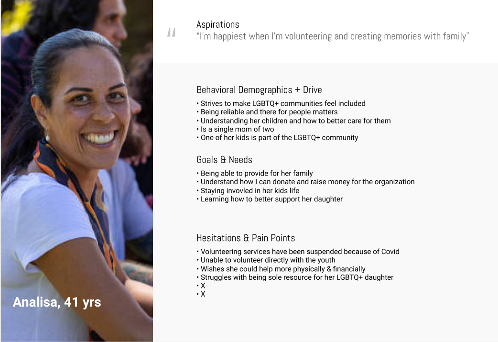
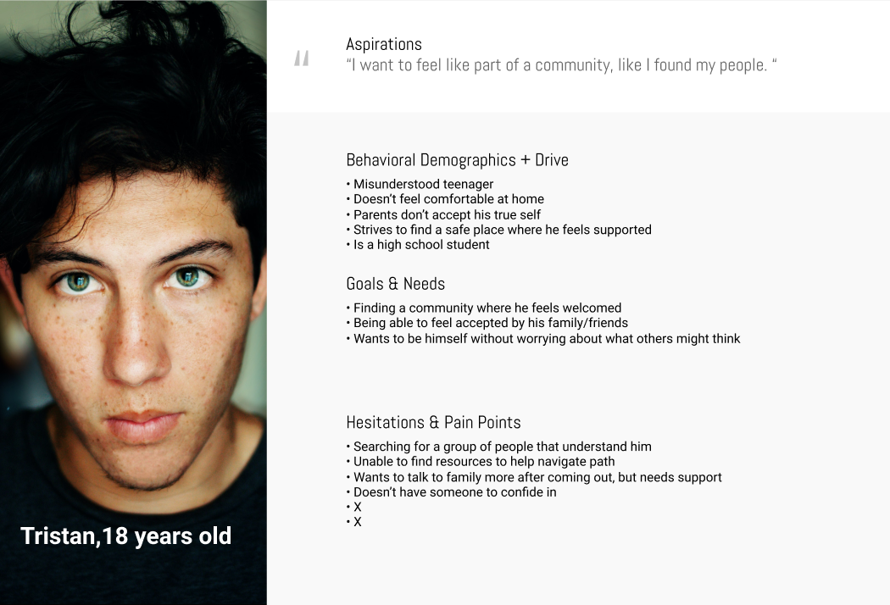
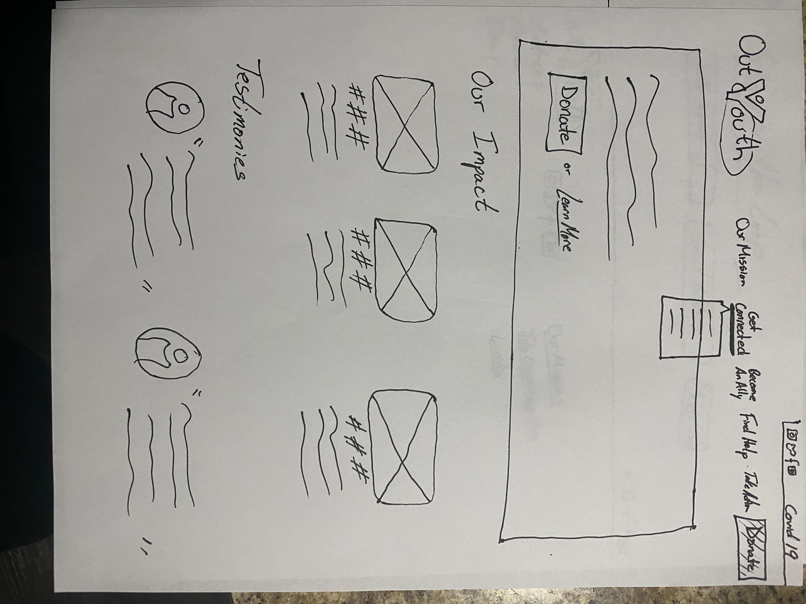
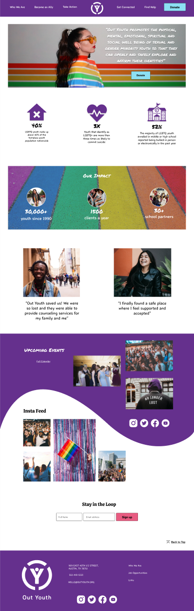
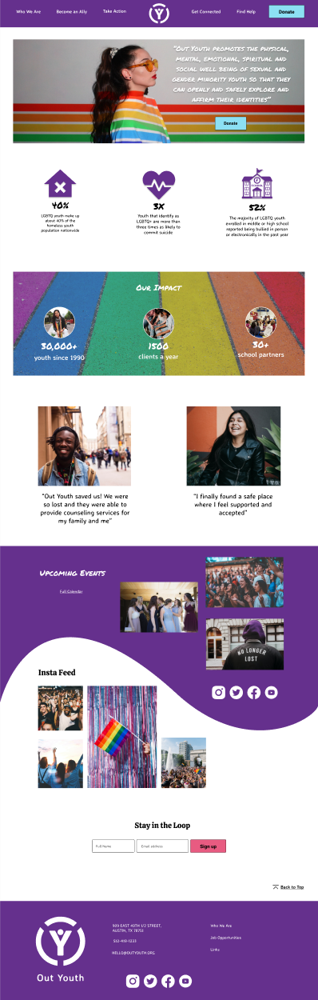

Out Youth Redesign
Goal: To redesign the website in a way that will be easier to navigate and more inviting to users.
Role: UX/UI Designer
Timeline: 2 weeks
Tools: Figma, Invision

Goal: To redesign the website in a way that will be easier to navigate and more inviting to users.
Role: UX/UI Designer
Timeline: 2 weeks
Tools: Figma, Invision
In order to start our redesign we first had to break down the original site and find what works and what could be improved. As a group we redline annotated the site and found that the navigation was confusing, the hero was hard to read, and the homepage did not tell us much about the organization and its goals.

Next we completed a competitor analysis of other similar organizations and found that their websites had a plethora of pictures and colors to illustrate a welcoming vibe; this was something that we felt Out Youth was lacking.
With this information we developed two user personas:
First we have Analisa, a single mother of two, one of which is part of the LGBTQ community. Analisa strives to be there for her child and support her in any way she can. She wants to learn more about the LGBTQ community and wants her child to have many resources she can turn to while she’s growing up.
Second we have Tristan, a misunderstood teenager who recently came out to his parents. Tristan doesn’t feel comfortable at home or school and wants to find somewhere he can be accepted for who he is. He is looking for resources to help him be able to talk to his parents about how he’s feeling.

Once we had our user personas, we came up with about 15 questions for user interviews. I interviewed two people that I thought would benefit from the Out Youth website. In total our group interviewed six people. During the interviews we also conducted a usability test of the original site. Most of them had never heard of Out Youth and none have been on the site.
From the interviews and usability test we learned that many people would have loved to have this organization growing up and some even stated that they know people that can benefit from it now. We also learned that some people had trouble navigating through the site and felt that it lacked a community feel.
Lastly in our research we conducted a stakeholder interview. We asked our stakeholder ten questions that we believed would help us better understand their goals for the site. From the interview we learned that they wanted help reorganizing their navigation because they mainly wanted people to be able to find the resources and help they are looking for.


Out Youth is an organization that provides a safe place for the LGBTQ community. We believe that attracting more donors to help support LGBTQ youth will allow us to build and maintain a network of resources that would otherwise not exist for LGBTQ+ youths.
We believe that sharing more human experiences in visual format along with supporting data to prove our impact as a resource for our users will create a foundation of trust that will motivate more allies to donate to our organization.
Before getting into wireframing we decided to create a sitemap of the new navigation. We started off by card sorting everything in the original navigation in a way that made sense to all of us. Next we organized everything in a sitemap for a clearer view of the new navigation.


As a group we decided to each create our own paper sketch of how we believe the homepage should look, as well as our own mood board for the site. After reviewing all four sketches and mood boards we noticed that we had a lot of similar ideas and some different ones that stood out.



This is our low-fidelity prototype, it is a combination of our four paper sketches. We also created a low-fidelity prototype for the mobile version of the site. Although we liked how it turned out we wanted to make sure everything was working properly and there was nothing that could confuse users, so we decided to perform a few user tests.
We were only able to conduct three user tests but we received a lot of great feedback to improve the prototype. We created a feature prioritization matrix to help us organize the feedback and focus on the high priority changes.
Some of the changes that we made were:
The navigation menu was changed from click to hover,
The footer was reorganized to fix spacing issues,
Lastly, we added a background to the Events section so there would be better separation between the sections.

Once those changes were made we created a style tile to help us in adding visuals to the prototype. When we added colors we were stuck between two different shades of purple for the primary color and decided to conduct an AB Test to decide on which color was more appealing. We were able to conduct four tests and the results were a tie, but the tie was broken when we performed an accessibility test on the colors and found that A was not accessible the way we wanted to use it.
 

We also conducted an AB test for the menu on the mobile version. We wanted to see if people preferred to have an “X” to exit out of the menu or if they would just click outside of the menu to close it. Three out of the four users determined that the “X” should be included.
Once we completed our high-fidelity prototype we conducted four user tests to make sure the prototype was working well and to make any last minute iterations. We received a lot of positive feedback, as well as some feedback on things we can change or add.
I really enjoyed working on this redesign, especially because I had such a great team to work with. There are still a few things that we would like to add, like redesigning other pages in the site and creating an iPad version for a smoother responsive web design. We also would like to add a section on the homepage that would help users navigate to where they need to go whether they are part of the LGBTQ community, an ally, or a family member.
After this project was turned in, my team and I regrouped to iterate on the sitemap because we had promised our stakeholder we would send it to them. My team and I also discussed finishing the redesign at no cost for Out Youth if that is something the organization is interested in.